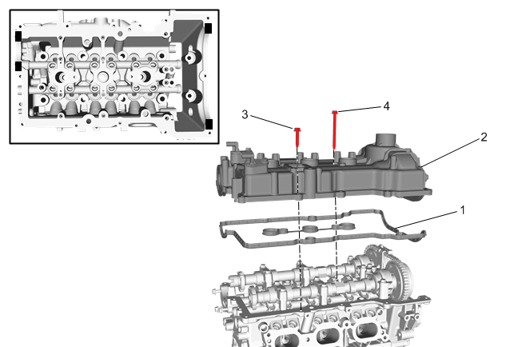

凸轮轴盖的更换
安装程序
- 1.如更换了新的凸轮轴盖，则安装凸轮轴盖上的零部件。凸轮轴盖的安装（LI6）、凸轮轴盖的安装
-

2.确保室温硬化密封剂(RTV)的正确使用。参见室温硬化密封胶（RTV）和厌氧密封胶的使用。
注意:
- • 在涂胶之前，缸盖与凸轮轴盖配合面不可有污染物。
- • 在涂密封胶后的8分钟内，100%拧紧所用螺栓。
- • 在涂密封胶后的8分钟内无法100%拧紧所用螺栓，可先将所有螺栓预拧紧到1牛米以上，然后1小时内100%拧紧所用螺栓。
- 3.在气缸盖前端和后端的4个圆弧过渡处涂室温硬化密封剂，如图中所示黑色区域。粘合剂、油液、润滑剂和密封胶
- 4.安装新的凸轮轴盖密封衬垫(1)。
- 5.凸轮轴盖 (2)@气缸盖»安装
- 6.凸轮轴盖螺栓-长（4）»安装并紧固[2x]10 N•m（89 lb in）
- 7.凸轮轴盖螺栓-短（3）»安装并紧固[12x]10 N•m（89 lb in）
- 8.点火线圈»安装–点火线圈的更换
-
9.连接各线束的电器连接器，重新定位发动机线束(4)。
- 10.进气歧管盖双头螺柱(3)»安装并紧固10 N•m（89 lb in）
- 11.线束螺栓(2)»安装并紧固9 N•m（80 lb in）
- 12.发动机线束托架螺栓(1)»安装并紧固9 N•m（80 lb in）
-
13.曲轴箱强制通风管(1)»安装–曲轴箱强制通风软管/管/管路的更换
- 14.真空泵总成»安装–真空泵的更换
-
15.增压空气冷却器出口管（3）@发动机»安装–增压空气冷却器出气软管的更换
- 16.进气歧管盖»安装–进气歧管盖的更换
- 17.连接蓄电池负极电缆。蓄电池负极电缆的断开和连接